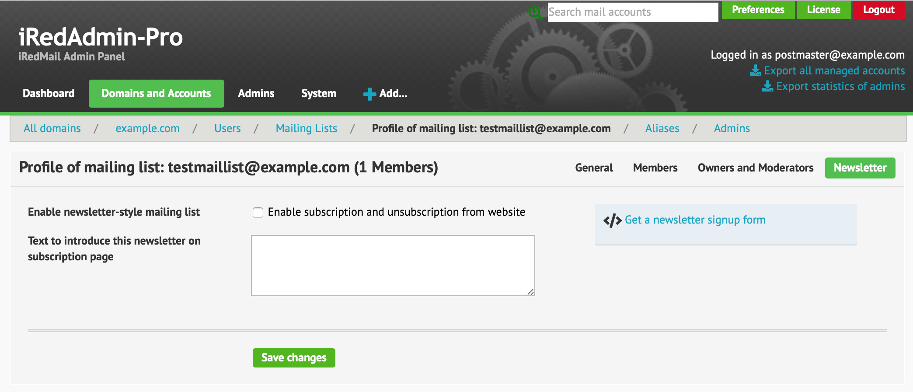
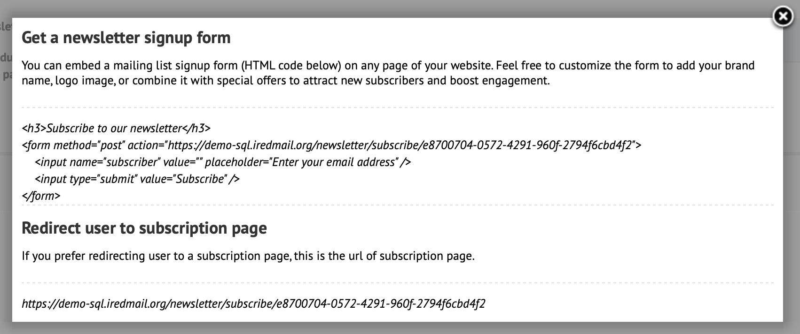

Since iRedMail-0.9.8, iRedMail integrates mlmmj as mailing list manager.
With iRedAdmin-Pro, you can easily manage mailing list accounts with its web UI. Screenshots of mailing list profile pages in iRedAdmin-Pro:
Profile page:

Allow users to subscribe from web page:

Instruction to generate a newsletter sign up form:

iRedMail integrates mlmmjadmin (a
RESTful API server developed by iRedMail team) to help you manage mlmmj mailing
lists, it also offers command line script
/opt/mlmmjadmin/tools/maillist_admin.py for system administrators.
Attention
All settings used to create or update mailing list profiles are listed on mlmmjadmin API document.
python maillist_admin.py create list@domain.com only_subscriber_can_post=yes disable_archive=no
python maillist_admin.py info list@domain.com
python maillist_admin.py update list@domain.com only_moderator_can_post=yes disable_subscription=yes
python maillist_admin.py delete list@domain.com archive=yes
python maillist_admin.py subscribers list@domain.com
python maillist_admin.py subscribed subscriber@domain.com
python maillist_admin.py has_subscriber list@domain.com subscriber@gmail.com